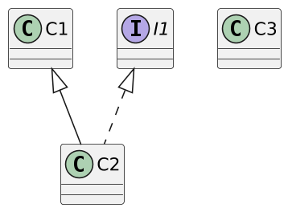
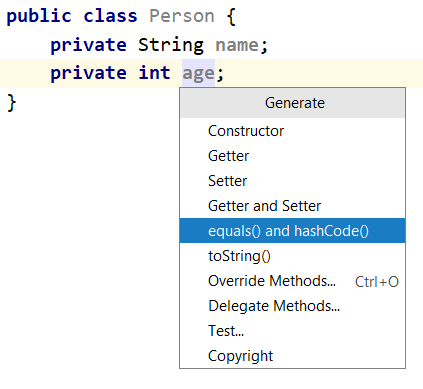
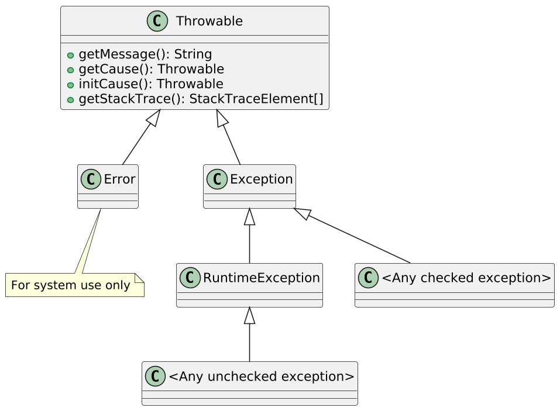
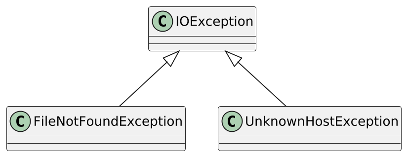
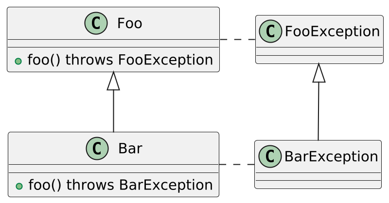
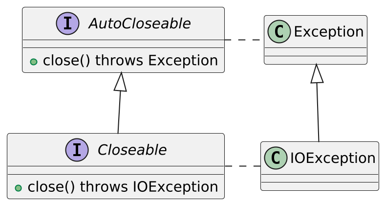
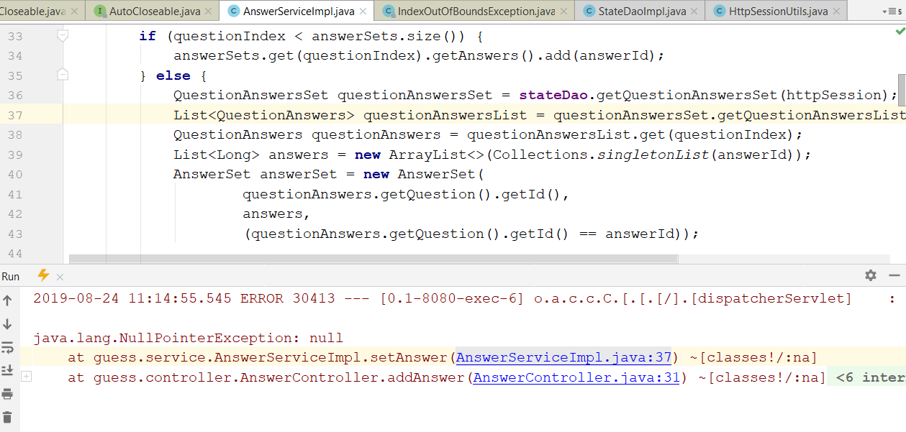
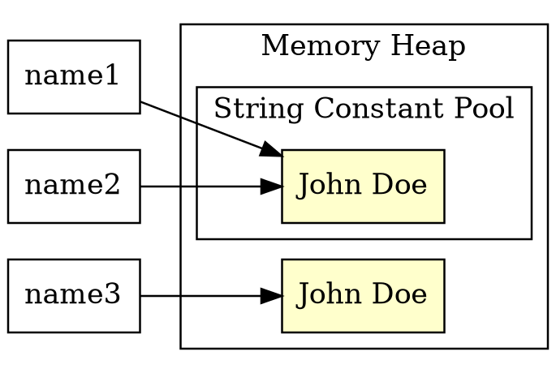
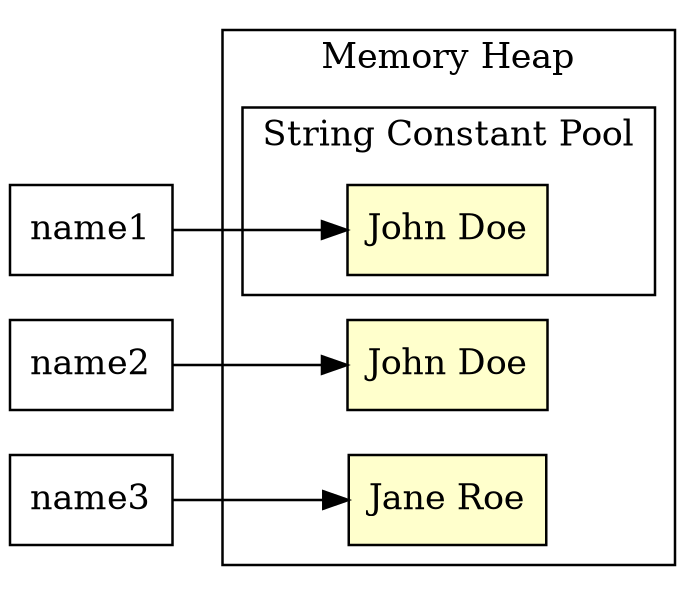
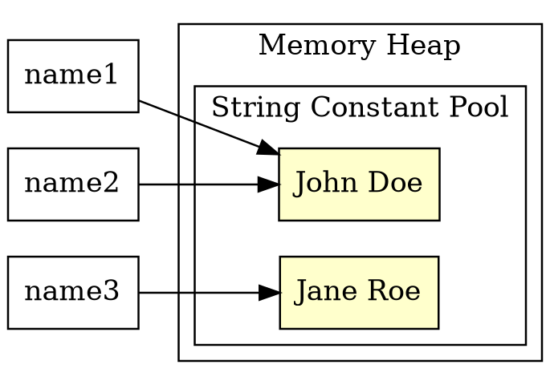

C1 c1; C2 c2; C3 c3; I1 i1;
x instanceof A // false, если x == null
c1 instanceof С2 // true или false
i1 instanceof C2 // true или false
c2 instanceof C1 // всегда возвращает true
с3 instanceof C2 // не скомпилируетсяCore Java. Лекция 4
instanceof и Pattern Matching. Класс Object. Исключения. Строки
@inponomarev
Иван Пономарёв, КУРС/МФТИ
Оператор instanceof

Приведение типов в эпоху до Pattern Matching (Java 14+)
Person p = . . .;
if (p instanceof Student) {
//если не защитить instanceof, возможен ClassCastException
Student s = (Student) p;
. . .
}Pattern Matching for instanceof (Java 14+, JEP305)
Person p = . . .;
if (p instanceof Student s) {
//здесь доступна переменная Student s
. . .
} else {
//здесь недоступна переменная Student s
}
//Скомпилируется
if (obj instanceof String s && s.length() > 5) {
. . .
s.contains(..)
}
//НЕ скомпилируется
if (obj instanceof String s || s.length() > 5) {...}Pattern matching for switch (Java 21+)
public int calculate(Expr expr) {
return switch (expr) {
//Не скомпилируется, если мы забудем что-то из реализаций Expr!
case Literal l -> l.value();
case Divide d -> calculate(d.left()) / calculate(d.right());
case Multiply m -> calculate(m.left()) * calculate(m.right());
case Add a -> calculate(a.left()) + calculate(a.right());
case Subtract s -> calculate(s.left()) - calculate(s.right());
};
}when guards for pattern matching
static String describe(Object o) {
return switch (o) {
case null -> "got null";
case String s when s.isBlank() -> "blank string";
case String s -> "string(" + s.length() + " chars)";
case Integer i when i < 0 -> "negative int " + (-i);
case Integer i -> "int " + i;
default -> "something else";
};
}Предупреждение про pattern matching
Pattern matching — это красивая возможность языка, но у неё ограничена область применения: Visitor Pattern, в основном нужный при разработке компиляторов / интерпретаторов формальных языков.
Не надо использовать pattern matching там, где достаточно обычного полиморфизма
Полиморфизм vs Pattern matching
Полиморфизм: поведение внутри класса
sealed interface Animal permits Dog, Cat { String speak(); }
final class Dog implements Animal {
public String speak() { return "woof"; }
}
final class Cat implements Animal {
public String speak() { return "meow"; }
}
static String speak(Animal a) {
return a.speak();
}Полиморфизм vs Pattern matching
Pattern matching: поведение вынесено из класса
sealed interface Animal permits Dog, Cat { }
final class Dog implements Animal {
}
final class Cat implements Animal {
}
static String speak(Animal a) {
return switch (a) {
case Dog d -> "woof";
case Cat c -> "meow";
};
}Object: the Cosmic Superclass
Любой класс в Java является наследником
ObjectПисать
class Employee extends Objectне надоВ этом классе определены важные методы:
equals,hashCode,toString— рассмотрим прямо сейчасnotify,notifyAll,wait— рассмотрим в лекциях по ConcurrencygetClass— в лекции про Reflection APIclone,finalize— не обращайте на них внимания, OK?
equals() и hashCode()
boolean equals(Object other)возвращаетtrueт. и т. т., когда внутреннее состояние совпадаетint hashCode()возвращает целое значение, которое обязано совпадать для объектов с одинаковым внутренним состояниемЭто нужно для хеш-таблиц (и, пожалуй, является протекшей абстракцией)
Формальный контракт equals
Рефлексивность:
\(\forall x \ne \mathrm{null} (x.equals(x))\)Симметричность:
\(\forall x \ne \mathrm{null} \, \forall y \ne \mathrm{null} (x.equals(y) \iff y.equals(x))\)Транзитивность:
\(\forall x \ne \mathrm{null} \, \forall y \ne \mathrm{null} \, \forall z \ne \mathrm{null} (x.equals(y) \& y.equals(z) \Rightarrow x.equals(z))\)Консистентность: если сравниваемые объекты не изменялись, повторный вызов
equalsдолжен возвращать одно и то же значение.\(\forall x \ne \mathrm{null} (x.equals(\mathrm{null}) = \mathrm{false})\)
Формальный контракт hashCode
Консистентность: если объект не изменялся, повторный вызов
hashCodeдолжен возвращать одно и то же значение (но не обязательно одно и то же между разными запусками приложения)Связь с
equals:
\(\forall x \forall y (x.equals(y) \Rightarrow x.hashCode() = y.hashCode())\)Хотя
\(x.hashCode() = y.hashCode() \Rightarrow x.equals(y)\)
и не обязательно, но желательно для большинства случаев.
Выводы
Переопределять
equalsиhashCodeнужно только вместе и согласованно, чтобы выполнить контракт \(x.equals(y) \Rightarrow x.hashCode() = y.hashCode()\)Грамотно реализовать
equalsиhashCodeтрудно, но, к счастью, самостоятельно это делать не нужно.Для тестирования есть специальная библиотка EqualsVerifier.
Для генерации
equalsиhashCodeможно использовать возможности IDE или библиотеки Lombok.
Генерация equals и hashCode

Генерация equals и hashCode
public class Person {
private String name;
private int age;
@Override
public boolean equals(Object o) {
// никогда, НИКОГДА не пишите это сами
if (this == o) return true;
if (o == null || getClass() != o.getClass()) return false;
Person person = (Person) o;
return age == person.age &&
Objects.equals(name, person.name);
}
@Override
public int hashCode() {
return Objects.hash(name, age);
}
}Или, если у нас Lombok
import lombok.EqualsAndHashCode;
@EqualsAndHashCode
public class Person {
private int age;
private String name;
}Переопределение toString
public class Person {
private String name;
private int age;
. . .
@Override
public String toString() {
return "Person{" +
"name='" + name + '\'' +
", age=" + age +
'}';
}
}
. . .
Person person = . . .
System.out.println(person);Или, если у нас Lombok
import lombok.ToString;
@ToString
public class Person {
private int age;
private String name;
}Полный «обвес» класса
public class Point {
private final int x;
private final int y;
/*Подождите! Нам нужны:
* конструктор
* getX() и getY()
* equals и hashCode
* toString
* 40 строчек кода из ничего!
*/
public double distance(Point other) {
...
}
}Или, если у нас Lombok
import lombok.Data;
@Data
public class Point {
private final int x;
private final int y;
public double distance(Point other) {
...
}
}Или, если у нас Java 14+
record Point(int x, int y) {
}equals,hashCodeиtoStringсоздаются неявно и автоматически
Exceptions
Program errors (bugs): null pointer dereference, running out of array bounds, invalid typecasts, division by zero etc.
Invalid input, user’s errors
Hardware and network: cannot open a file, running out of memory / out of disk space etc.
Exception is an unambiguous way to tell the user that the call was finished unsuccessfully (unlike return codes etc.).
Exception classes hierarchy

What should we do when we got an exception?
Errorand subclasses — don’t handle (something catastrophic happened).RuntimeExceptionand subclasses — fix the code, there should be none! (in fact, it’s more complex than that).Checked exceptions — handle them.
Declaring checked exceptions
public FileInputStream(String name) throws FileNotFoundException{
. . .
}Declaring more than one exception
class MyAnimation {
. . .
public Image loadImage(String s)
throws FileNotFoundException, EOFException {
. . .
}
}No need to declare unchecked exceptions
No need to declare two exceptions, if one is a subclass of the other
Truth of Life: IDE does everything for you
Throwing exceptions
throw new EOFException();(If we throw a checked exception, the compiler will let us do it only if it’s either declared or handled in the same method.)
Throwing exceptions
We should not explicitly throw
ExceptionRuntimeExceptionThrowableError
(J. Bloch, Effective Java, Item 72)
What base class should we choose for our exception? This is the question
If we inherit it from
Exception— we should be ready to either declare or catch it everywhere. Is it good or bad?We can inherit from
RuntimeException. And forget to catch it.In the age of lambdas and streams, checked exceptions are rather an unneeded headache.
People are still arguing about checked exceptions.
How to catch an exception: the try-catch block
try {
// . . . code . . .
// . . . more code . . .
// . . . more code . . .
} catch (ExceptionType e) {
// handler for this type of exception
// use e object to extract the data!
}How to catch several types of exceptions

try {
//code that might throw exceptions
} catch (FileNotFoundException e) {
//emergency action for missing files
} catch (UnknownHostException e) {
// emergency action for unknown hosts
} catch (IOException e) {
// emergency action for all other I/O problems
}try-multicatch
try {
//code that might throw exceptions
} catch (FileNotFoundException | UnknownHostException e) {
//emergency action for missing files or unknown hosts
//e type is the most specific common supertype
//of the throwable types
}Rethrowing exceptions (with smart type check)
. . . throws SQLException . . .
try {
//database access: only SQLException can be thrown here
} catch (Exception e) {
logger.log(level, message, e);
//Although Exception is a less specific than SQLException
//the compiler will be ok with this
throw e;
}Wrapping exceptions
. . . throws ServletException . . .
try {
//database access: SQLException can be thrown here
} catch (SQLException e) {
ServletException se = new ServletException("database error");
//we save information about the initial cause
se.initCause(e);
throw se;
}Overriding methods with declared exceptions

Exception can be of the same type or subtype
It is not prohibited if there will be no exception at all
Standard reusable types of unchecked exceptions
J. Bloch 'Effective Java', Item 72:
| invalid non-null method argument |
| internal state of the object doesn’t fit for the invocation of this method |
|
|
| index is either less than minimum value or bigger than maximum value |
You will be tempted to do this…
try {
...
} catch (Exception e) {
e.printStackTrace();
//And compiler is happy!
//(but your colleague who does the code review is not)
}…but you should not do this!
If you can’t understand what to do with the exception
Declare checked exception in the method
Wrap using
initCauseor constructor argumentinto the declared checked exception
into unchecked exception (
InvalidStateException, for example)
Better don’t do this: Lobmok’s
@SneakyThrows(the most arguable feature of Lombok)
The general rule
Throw early, catch late.
Throw an exception as soon as it is clear that something is wrong.
Do not handle an exception until it is clear how exactly you should do it.
finally block
InputStream in = new FileInputStream(. . .);
try {
// an exception can be thrown here
code that might throw exceptions
// and even return from the method will call the 'finally' block!
if (...)
return;
} catch (IOException e) {
// sometimes an exception is thrown
// during exception handling
show error message
} finally {
// finally block will work in any case!
in.close();
}A problem with finally block
...throws IOException...
//One resource
BufferedReader br = new BufferedReader(new FileReader(path));
try {return br.readLine();}
finally {br.close();}A problem with finally block
...throws IOException...
//Two resources
InputStream in = new FileInputStream(src);
try {
OutputStream out = new FileOutputStream(dst);
try {
byte[] buf = new byte[BUFFER_SIZE];
int n;
while ((n = in.read(buf)) >= 0)out.write(buf, 0, n);}
finally {out.close();}}
finally {in.close();}try-with-resources
Common scheme
try (Resource res = . . .) {
work with res
}Example:
try (Scanner in = new Scanner(
new FileInputStream("/usr/share/dict/words")), "UTF-8") {
while (in.hasNext())
System.out.println(in.next());
}Multiple resources
try (Scanner in = new Scanner(
new FileInputStream("/usr/share/dict/words"), "UTF-8");
PrintWriter out = new PrintWriter("out.txt")) {
while (in.hasNext())
out.println(in.next().toUpperCase());
}Closeable and AutoCloseable interfaces

Exceptions are for exceptional cases only!
//HORRIBLE. DON'T DO THIS
try {
int i = 0;
while (true)
range[i++].climb();
} catch (ArrayIndexOutOfBoundsException e) {
}
//DO THIS!!
for (Mountain m: range)
m.climb();Exceptions are for exceptional cases only!
//HORRIBLE. DON'T DO THIS
try {
Iterator<Foo> i = collection.iterator();
while (true)
Foo foo = i.next();
} catch (NoSuchElementException e) {
}
//DO THIS!!
for (Iterator<Foo> i = collection.iterator(); i.hasNext(); ) {
Foo foo = i.next();
. . .
}Don’t use exceptions for control flow
It masks the real errors and makes the code difficult to support.
It is resource consuming (exceptions have huge stack traces attached).
It is slow: compiler never optimizes for exceptions.
Exception is in production. What should we do?
2019-08-24 11:14:55.545 ERROR 30413 --- [0.1-8080-exec-6] o.a.c.c.C.[.[.[/].[dispatcherServlet] : Servlet.service() for servlet [dispatcherServlet] in context with path [] threw exception [Request processing failed; nested exception is java.lang.NullPointerException] with root cause java.lang.NullPointerException: null at guess.service.AnswerServiceImpl.setAnswer(AnswerServiceImpl.java:37) ~[classes!/:na] at guess.controller.AnswerController.addAnswer(AnswerController.java:31) ~[classes!/:na] at sun.reflect.GeneratedMethodAccessor75.invoke(Unknown Source) ~[na:na] at sun.reflect.DelegatingMethodAccessorImpl.invoke(DelegatingMethodAccessorImpl.java:43) ~[na:1.8.0_222] at java.lang.reflect.Method.invoke(Method.java:498) ~[na:1.8.0_222] at org.springframework.web.method.support.InvocableHandlerMethod.doInvoke(InvocableHandlerMethod.java:190) ~[spring-web-5.1.8.RELEASE.jar!/:5.1.8.RELEASE] at org.springframework.web.method.support.InvocableHandlerMethod.invokeForRequest(InvocableHandlerMethod.java:138) ~[spring-web-5.1.8.RELEASE.jar!/:5.1.8.RELEASE] at org.springframework.web.servlet.mvc.method.annotation.ServletInvocableHandlerMethod.invokeAndHandle(ServletInvocableHandlerMethod.java:104) ~[spring-webmvc-5.1.8.RELEASE.jar!/:5.1.8.RELEASE] at org.springframework.web.servlet.mvc.method.annotation.RequestMappingHandlerAdapter.invokeHandlerMethod(RequestMappingHandlerAdapter.java:892) ~[spring-webmvc-5.1.8.RELEASE.jar!/:5.1.8.RELEASE] at org.springframework.web.servlet.mvc.method.annotation.RequestMappingHandlerAdapter.handleInternal(RequestMappingHandlerAdapter.java:797) ~[spring-webmvc-5.1.8.RELEASE.jar!/:5.1.8.RELEASE] at org.springframework.web.servlet.mvc.method.AbstractHandlerMethodAdapter.handle(AbstractHandlerMethodAdapter.java:87) ~[spring-webmvc-5.1.8.RELEASE.jar!/:5.1.8.RELEASE] at org.springframework.web.servlet.DispatcherServlet.doDispatch(DispatcherServlet.java:1039) ~[spring-webmvc-5.1.8.RELEASE.jar!/:5.1.8.RELEASE] at org.springframework.web.servlet.DispatcherServlet.doService(DispatcherServlet.java:942) ~[spring-webmvc-5.1.8.RELEASE.jar!/:5.1.8.RELEASE] at org.springframework.web.servlet.FrameworkServlet.processRequest(FrameworkServlet.java:1005) ~[spring-webmvc-5.1.8.RELEASE.jar!/:5.1.8.RELEASE] at org.springframework.web.servlet.FrameworkServlet.doPost(FrameworkServlet.java:908) ~[spring-webmvc-5.1.8.RELEASE.jar!/:5.1.8.RELEASE] at javax.servlet.http.HttpServlet.service(HttpServlet.java:660) ~[tomcat-embed-core-9.0.21.jar!/:9.0.21] at org.springframework.web.servlet.FrameworkServlet.service(FrameworkServlet.java:882) ~[spring-webmvc-5.1.8.RELEASE.jar!/:5.1.8.RELEASE] at javax.servlet.http.HttpServlet.service(HttpServlet.java:741) ~[tomcat-embed-core-9.0.21.jar!/:9.0.21] at org.apache.catalina.core.ApplicationFilterChain.internalDoFilter(ApplicationFilterChain.java:231) ~[tomcat-embed-core-9.0.21.jar!/:9.0.21] at org.apache.catalina.core.ApplicationFilterChain.doFilter(ApplicationFilterChain.java:166) ~[tomcat-embed-core-9.0.21.jar!/:9.0.21] at org.apache.tomcat.websocket.server.WsFilter.doFilter(WsFilter.java:53) ~[tomcat-embed-websocket-9.0.21.jar!/:9.0.21] at org.apache.catalina.core.ApplicationFilterChain.internalDoFilter(ApplicationFilterChain.java:193) ~[tomcat-embed-core-9.0.21.jar!/:9.0.21] at org.apache.catalina.core.ApplicationFilterChain.doFilter(ApplicationFilterChain.java:166) ~[tomcat-embed-core-9.0.21.jar!/:9.0.21] at org.springframework.web.filter.RequestContextFilter.doFilterInternal(RequestContextFilter.java:99) ~[spring-web-5.1.8.RELEASE.jar!/:5.1.8.RELEASE] at org.springframework.web.filter.OncePerRequestFilter.doFilter(OncePerRequestFilter.java:109) ~[spring-web-5.1.8.RELEASE.jar!/:5.1.8.RELEASE] at org.apache.catalina.core.ApplicationFilterChain.internalDoFilter(ApplicationFilterChain.java:193) ~[tomcat-embed-core-9.0.21.jar!/:9.0.21] at org.apache.catalina.core.ApplicationFilterChain.doFilter(ApplicationFilterChain.java:166) ~[tomcat-embed-core-9.0.21.jar!/:9.0.21] at org.springframework.web.filter.FormContentFilter.doFilterInternal(FormContentFilter.java:92) ~[spring-web-5.1.8.RELEASE.jar!/:5.1.8.RELEASE] at org.springframework.web.filter.OncePerRequestFilter.doFilter(OncePerRequestFilter.java:109) ~[spring-web-5.1.8.RELEASE.jar!/:5.1.8.RELEASE] at org.apache.catalina.core.ApplicationFilterChain.internalDoFilter(ApplicationFilterChain.java:193) ~[tomcat-embed-core-9.0.21.jar!/:9.0.21] at org.apache.catalina.core.ApplicationFilterChain.doFilter(ApplicationFilterChain.java:166) ~[tomcat-embed-core-9.0.21.jar!/:9.0.21] at org.springframework.web.filter.HiddenHttpMethodFilter.doFilterInternal(HiddenHttpMethodFilter.java:93) ~[spring-web-5.1.8.RELEASE.jar!/:5.1.8.RELEASE] at org.springframework.web.filter.OncePerRequestFilter.doFilter(OncePerRequestFilter.java:109) ~[spring-web-5.1.8.RELEASE.jar!/:5.1.8.RELEASE] at org.apache.catalina.core.ApplicationFilterChain.internalDoFilter(ApplicationFilterChain.java:193) ~[tomcat-embed-core-9.0.21.jar!/:9.0.21] at org.apache.catalina.core.ApplicationFilterChain.doFilter(ApplicationFilterChain.java:166) ~[tomcat-embed-core-9.0.21.jar!/:9.0.21] at org.springframework.web.filter.CharacterEncodingFilter.doFilterInternal(CharacterEncodingFilter.java:200) ~[spring-web-5.1.8.RELEASE.jar!/:5.1.8.RELEASE] at org.springframework.web.filter.OncePerRequestFilter.doFilter(OncePerRequestFilter.java:109) ~[spring-web-5.1.8.RELEASE.jar!/:5.1.8.RELEASE] at org.apache.catalina.core.ApplicationFilterChain.internalDoFilter(ApplicationFilterChain.java:193) ~[tomcat-embed-core-9.0.21.jar!/:9.0.21] at org.apache.catalina.core.ApplicationFilterChain.doFilter(ApplicationFilterChain.java:166) ~[tomcat-embed-core-9.0.21.jar!/:9.0.21] at org.apache.catalina.core.StandardWrapperValve.invoke(StandardWrapperValve.java:202) ~[tomcat-embed-core-9.0.21.jar!/:9.0.21] at org.apache.catalina.core.StandardContextValve.invoke(StandardContextValve.java:96) [tomcat-embed-core-9.0.21.jar!/:9.0.21] at org.apache.catalina.authenticator.AuthenticatorBase.invoke(AuthenticatorBase.java:490) [tomcat-embed-core-9.0.21.jar!/:9.0.21] at org.apache.catalina.core.StandardHostValve.invoke(StandardHostValve.java:139) [tomcat-embed-core-9.0.21.jar!/:9.0.21] at org.apache.catalina.valves.ErrorReportValve.invoke(ErrorReportValve.java:92) [tomcat-embed-core-9.0.21.jar!/:9.0.21] at org.apache.catalina.core.StandardEngineValve.invoke(StandardEngineValve.java:74) [tomcat-embed-core-9.0.21.jar!/:9.0.21] at org.apache.catalina.connector.CoyoteAdapter.service(CoyoteAdapter.java:343) [tomcat-embed-core-9.0.21.jar!/:9.0.21] at org.apache.coyote.http11.Http11Processor.service(Http11Processor.java:408) [tomcat-embed-core-9.0.21.jar!/:9.0.21] at org.apache.coyote.AbstractProcessorLight.process(AbstractProcessorLight.java:66) [tomcat-embed-core-9.0.21.jar!/:9.0.21] at org.apache.coyote.AbstractProtocol$ConnectionHandler.process(AbstractProtocol.java:853) [tomcat-embed-core-9.0.21.jar!/:9.0.21] at org.apache.tomcat.util.net.NioEndpoint$SocketProcessor.doRun(NioEndpoint.java:1587) [tomcat-embed-core-9.0.21.jar!/:9.0.21] at org.apache.tomcat.util.net.SocketProcessorBase.run(SocketProcessorBase.java:49) [tomcat-embed-core-9.0.21.jar!/:9.0.21] at java.util.concurrent.ThreadPoolExecutor.runWorker(ThreadPoolExecutor.java:1149) [na:1.8.0_222] at java.util.concurrent.ThreadPoolExecutor$Worker.run(ThreadPoolExecutor.java:624) [na:1.8.0_222] at org.apache.tomcat.util.threads.TaskThread$WrappingRunnable.run(TaskThread.java:61) [tomcat-embed-core-9.0.21.jar!/:9.0.21] at java.lang.Thread.run(Thread.java:748) [na:1.8.0_222]
Analyze → Analyze Stack Trace…

Expore the stack trace

Here we make a pause in learning the language features in favor of learning the library
J. Bloch, 'Effective Java': 'By using a standard library, you take advantage of the knowledge of the experts who wrote it and the experience of those who used it before you… Numerous features are added to the libraries in every major release, and it pays to keep abreast of these additions.'
Besides "fresh" classes the standard library still holds many outdated classes for the sake of backwards compatibility.
You will meet
Vector,Date,File,StringBuffer,Randomand others which I will not describe in my lectures.Be careful: the fact that you saw them in legacy code, some outdated tutorial on Internet etc. does not justify their usage in the new code
A specific example from 'Effective Java' book: ThreadLocalRandom
//Bad: seed is calculated at each invocation. DON'T!!
double rnd = (new Random()).nextDouble();
//Before Java 7+ it was OK, but now DON'T!!
static final Random r = new Random();
static double random() {
return r.nextDouble();
}
//Java 7-16: 3.6 times faster, statistically better
double rnd = ThreadLocalRandom.current().nextDouble();
//Java 17+: JEP356. Not thread safe!
RandomGenerator generator = RandomGenerator.getDefault();
generator.nextDouble();String class
String e = ""; // an empty string
String java = "Java\u2122"; //Java™String is an immutable object.
Need another string? Build another one from scratch:
String greeting = "Hello!"
greeting = greeting.substring(0, 3) + "p!"; //Help!Although there is an array inside the String, you cannot change its elements!
Internal representation of strings
Before Java 9 —
char[]After Java 9 —
byte[]andbyte coderUTF-16 / Latin1 ('Compact Strings')
Internal String constants pool
|  |
Comparing strings
if (a == "John Doe")— wrong, novice’s error.if (a.equals("John Doe"))— wrong, we’ll get NPE, ifa == null.if ("John Doe".equals(a))— this is how experienced folks do it.if ("John Doe".equalsIgnoreCase(a))— case insensitive comparision.if(str != null && !str.isEmpty())— there is something in this string!if(str != null && !str.isBlank())— there is something in this string besides spaces, tabs, carriage returns etc.!
String interning
|  |
String interning
|  |
String concatenation
String foo = "foo";
String bar = "bar";
System.out.println(foo + bar); //foobarThe situation is following:
Unlike other languages, there is no operators overloading for users in Java.
+operator is overloaded for strings on language level.==operator is not overloaded, although its non-overloaded version does not make sense :-(
String concatenation: performance problem
//Don't do this: the performance is poor!
String result = "";
for (int i = 0; i < numItems(); i++)
result += lineForItem(i);
return result;String concatenation: use StringBuilder!
//You can allocate an approximate number of characters in advance
StringBuilder b = new StringBuilder(numItems() * LINE_WIDTH);
//And you can always use the default: new StringBuilder() (16 chars)
for (int i = 0; i < numItems(); i++)
b.append(lineForItem(i));
return b.toString();String length
String length in UTF-16 code units:
String greeting = "Hello";
int n = greeting.length(); // is 5.«The real» string length in code points:
int cpCount = greeting.codePointCount(0, greeting.length());Character at a given position
//works at O(1) time
char first = greeting.charAt(0); // first is 'H'
char last = greeting.charAt(4); // last is 'o'If you need code points:
int[] codePoints = str.codePoints().toArray();Useful methods
int length()
boolean isEmpty() / boolean isBlank()
char charAt(int index)
int compareTo(String anotherString)
boolean equals(Object anObject)
boolean equalsIgnoreCase(String anotherString)
boolean startsWith(String prefix)
boolean endsWith(String suffix)
String toLowerCase() / String toUpperCase()
String trim()
String join(CharSequence delimiter, CharSequence... elements)Harmful methods
indexOf../lastIndexOf..replace..split..
In combination with substring and concatenation they are sometimes used for string parsing/transformation.
Don’t do that. This is the way for endless pain, endless bugs and endless shame. Use definite state machines or regular expressions instead.